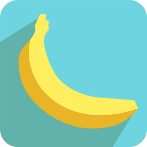
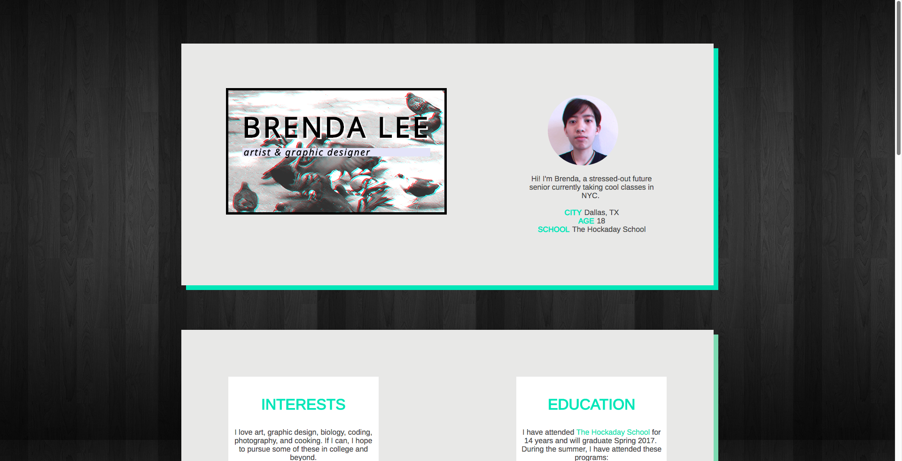
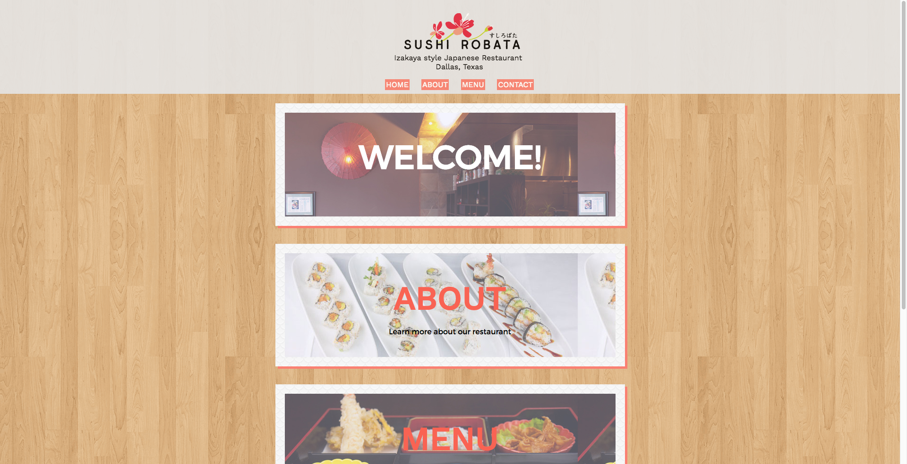

TECHNOVATION CHALLENGE 2016
The Technovation Challenge is an international all-girls coding competition with the aim to develop a mobile app that alleviates a social issue. It is sponsored by the leading technology companies Adobe, Google, Verizon, Intel, and more.

team: CodeHAUS
school: Hockaday
app name: Ask Ada
social problem: lack of informational and accessible sex ed
status: world pitch finalist (1 of 6), honorable mention
Barnard Summer in the City 2016
Web Development
Instructor: Courtney Yadoo


Contemporary Art (Studio)
Instructor: Julia Westerbeke